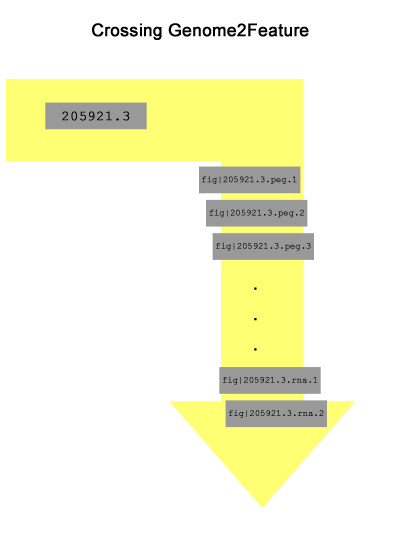
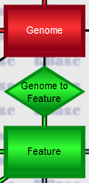

If you wish to work in the SEEDtk environment, it is critical that you become very familiar with the Entity-Relationship model used by the SEEDtk Project (ERDB).
This diagram represents a moderately abstract organization of the data the project uses, maintains, and borrows (from public sources).
You need to be able to get to the diagram, locate the fields in each entity and relationship (you will find yourself consulting this data continuously as you formulate queries).
We say that first in most of our tutorials, because it is critical. Be sure that you can
In this tutorial we hope to expose you to the basic steps needed to answer typical queries. We believe that if you actually type in commands, run them, and then start exploring minor variations, you will gradually figure out how to answer a wide variety of queries without the help of a programmer. We realize that using the command line is often viewed as an insurmountable barrier, but we feel that being able to easily handle the types of situations we explore here justifies your considering this approach seriously.
In this tutorial, we will present an overview of how to formulate queries to extract data from the ERDB. A general overview will be useful only if you take the time to explore it by trying to solve typical examples. Here are some examples we will cover. In each case, as we develop a solution, you should think of minor variants, formuate the changes needed to solve them, and gradually develop the expertise to attack more difficult queries.
Our overall approach will almost always be;
The tables we work with are text files consisting of columns separated by the tab character; in these examples, we have two types of columns:
Consider the following 4-column table containing [genome-id,GC-content,contigs,name]:
1001584.4 40.842673521629 83 Avibacterium paragallinarum AVPAR72 100226.1 71.9983672832904 3 Streptomyces coelicolor A3(2) 1002672.3 31.6706973543796 1 Candidatus Pelagibacter sp. IMCC9063 1002809.3 38.5933388868963 2 Solibacillus silvestris StLB046 1004151.3 43.2871086624099 17 Photorhabdus temperata subsp. khanii NC19
It should be clear on reflection that there is a single entity column (the one with Genome ids).
Suppose that you have such a table, you can then add attribute columns using the get_entities command. Here is a command that would add two columns to the 4-column table:
get_entities Genome -c 1 --fields dna-size,genetic-code
You need the -c 1 to indicate that you wish to add columns associated with the ids in entity column 1.
Suppose that I asked you "What strains are referred to by genome ids 1041139.4 and 1045855.3?" Spend a few minutes trying to answer the question, and then study
svc_echo 1041139.4 1045855.3 | get_entities Genome -c 1 --fields name
1041139.4 Rhizobium giardinii bv. giardinii H152
1045855.3 Pseudoxanthomonas spadix BD-a59
The svc_echo command produces a single-coumn table with two rows (run it and verify that you understand it).
The get_entities command adds a name column, allowing you to answer the question. You could have avoided the use of svc_echo by just creating a file with two lines in it and using that as the initial table.
Now let us attack the first problem in our list, which involves finding a set of Bacilli genomes. Our initial plan is pretty simple -- just use an all_entities command, constraing the output using the --like field,PATTERN argument (which we need to discuss) twice. Consider
all_entities Genome --fields 'id,name' --like 'name,Bacillus%' --like 'core,1' 261594.1 Bacillus anthracis str. 'Ames Ancestor' 198094.1 Bacillus anthracis str. Ames 649639.5 Bacillus cellulosilyticus DSM 2522 226900.1 Bacillus cereus ATCC 14579 637380.6 Bacillus cereus biovar anthracis str. CI . .
This is a typical use of the all_entities command to build an initial table (which in this case is also the final table). You designate the fields you want in the table, and then use --like 'name,Bacillus%' --like 'core,1' as arguments to constrin the set of Genomes returned. The --like option specifies a field and a PATTERN. The PATTERN must match the contents of the field precisely, exept that a percent sign will match any string. Thus, the first use of "--like" keeps only Genomes with names that begin with "Bacillus", and the second causes all Genomes with a value other than '1' in the core field to be rejected. Note that core is a boolean field. In boolean fields we use '0' to represent false and '1' to represent true.
Given what we have talked about so far, you should be able to handle this one without too much grief. It is just a variant of the last one. We suggest
all_entities Genome --fields 'id,name' --like 'name,Streptococcus%' --like 'contigs,1'
205921.3 Streptococcus agalactiae A909
862971.3 Streptococcus anginosus C238
552526.7 Streptococcus equi subsp. zooepidemicus MGCS10565
467705.8 Streptococcus gordonii str. Challis substr. CH1
591365.3 Streptococcus intermedius JTH08
246201.1 Streptococcus mitis NCTC 12261
.
.
.
This one, however, is going to force us to discuss crossing relationships.
Relationships are represented as diamonds in the ER diagram. A relationship always connects two entities in the diagram. This represents the fact that it associates instances of one entity with instances of another. For example, the relationship Genome2Feature connects each genome to all of its called features. If we are positioned on Streptococcus agalacticae A989 (genome 205921.3), the Genome2Feature relationship will enable us to find all of the genome's protein-encoding genes, RNA-encoding genes, and other identified regions. Getting from the genome to those features is what we mean by crossing the relationship.
In this case we want only the protein-encoding genes. Begin by studying the ERDB. Our initial plan for this one might go something like this:
To make the problem concrete, suppose that 83333.1 is G. You should be able to create the initial trivial table containing just the id of G using
svc_echo 83333.1
The next step is to cross the Genome2Feature relationship using
svc_echo 83333.1 | get_relationship Genome2Feature -c 1 --to id
83333.1 fig|83333.1.lrr.1
83333.1 fig|83333.1.lrr.10
83333.1 fig|83333.1.lrr.11
83333.1 fig|83333.1.lrr.12
83333.1 fig|83333.1.lrr.13
83333.1 fig|83333.1.lrr.14
83333.1 fig|83333.1.lrr.15
83333.1 fig|83333.1.lrr.16
.
.
.
which will create a new column in the table. The crossing requires that you spcify
an entity column in the input table (in this case, -c 1). Then for each row in the input table,
the entity id is examined if it is connected by the specified relationship (Genome2Feature) to one or
more Feature entities, then for each connected entity a row is built that includes the input row
followed by the fields designated by --to (in this case the id of the connected entity - these added target entities make up a new column added to the end of the columns in the input rows). Thus,
for each input row, 0 or more extended output rows are added to the new table. If you run the above
command, you should get a new table with one row for each Feature in genome 83333.1.
We can create a three column table, adding the key of a subsystem Cell using
get_relationship Feature2Cell -c 2 --to id
Now we have a table composed of [Genome,Feature,Cell]. To create a single-column table containing just the sorted Features that connected to Cells, we would use svc_extract and svc_sort. Here is the whole pipeline put together
svc_echo 83333.1 |
get_relationship Genome2Feature -c 1 --to id |
get_relationship Feature2Cell -c 2 --to id |
svc_extract -f 2 |
svc_sort -c 1 -u
fig|83333.1.peg.100
fig|83333.1.peg.1000
fig|83333.1.peg.1001
fig|83333.1.peg.1002
fig|83333.1.peg.1003
fig|83333.1.peg.1004
fig|83333.1.peg.1005
.
.
.
Here is the command sequence on a single line for copy/paste purposes.
svc_echo 83333.1 | get_relationship Genome2Feature -c 1 --to id | get_relationship Feature2Cell -c 2 --to id | svc_extract -f 2 | svc_sort -c 1 -u
We urge you to step through this pipeline one command at a time (i.e., run an initial segment and pipe the results to head).
Metabolic models are represented in the database by the Complex entity, which represents a set of reactions triggered by a role. So, we are looking for roles connected to complexes. The ability to cross relationships opens up many possibilities. A simple plan for this task would be
There is a wrinkle though. For Roles, we have long descriptions (the description field) and shorter, cryptic ids. We need to make clear what the desired output will be. We decided to produce a 2-column table [id,description] sorted on the second field. Here is the result:
all_entities Role --fields id,description |
get_relationship Role2Complex -c 1 --to id |
svc_extract -f 1,2 |
svc_sort -c 2 -u
6aHydr3OMeth (+)-6a-hydroxymaackiain 3-O-methyltransferase (EC 2.1.1.270)
TMuurSynt (+)-T-muurolol synthase (EC 4.2.3.98)
AbscAcid8Hydr (+)-abscisic acid 8'-hydroxylase (EC 1.14.13.93)
AlphBarbSynt (+)-alpha-barbatene synthase (EC 4.2.3.69)
AlphPineSynt (+)-alpha-pinene synthase (EC 4.2.3.121)
AlphSantSyntFarn (+)-alpha-santalene synthase [(2Z,6Z)-farnesyl diphosphate cyclizing] (EC 4.2.3.50)
AlphTerpSynt (+)-alpha-terpineol synthase (EC 4.2.3.112)
.
.
.
Here is the command sequence on a single line for copy/paste purposes.
all_entities Role --fields id,description | get_relationship Role2Complex -c 1 --to id | svc_extract -f 1,2 | svc_sort -c 2 -u
If you studied the last example, this one is a breeze. We simply use Role2Subsystem instead of Role2Complex.
all_entities Role --fields id,description |
get_relationship Role2Subsystem -c 1 --to id |
svc_extract -f 1,2 |
svc_sort -c 2 -u
Cary1OlSynt (+)-caryolan-1-ol synthase (EC 4.2.1.138)
FarnDiphSynt (2E,6E)-farnesyl diphosphate synthase (EC 2.5.1.10)
FarnDiphSynt2 (2E,6Z)-farnesyl diphosphate synthase (EC 2.5.1.68)
SulfSulfLyasSubu2 (2R)-sulfolactate sulfo-lyase subunit alpha (EC 4.4.1.24)
SulfSulfLyasSubu (2R)-sulfolactate sulfo-lyase subunit beta (EC 4.4.1.24)
HydrAcpDehySubuHada (3R)-hydroxyacyl-ACP dehydratase subunit HadA
HydrAcpDehySubuHadb (3R)-hydroxyacyl-ACP dehydratase subunit HadB
.
.
.
Here is the command sequence on a single line for copy/paste purposes.
all_entities Role --fields id,description | get_relationship Role2Subsystem -c 1 --to id | svc_extract -f 1,2 | svc_sort -c 2 -u
Using the last two examples, we can build two files (each a 2-column table)
all_entities Role --fields id,description |
get_relationship Role2Complex -c 1 --to id |
svc_extract -f 1,2 |
svc_sort -c 2 -u > roles.in.models
nbsp;
all_entities Role --fields id,description |
get_relationship Role2Subsystem -c 1 --to id |
svc_extract -f 1,2 |
svc_sort -c 2 -u > roles.in.subsystems
Now roles.in.models contains the roles connected to complexes and roles.in.subsystems contains the roles connected to subsystems. We need to see which roles are found in both files and which are only found in roles.in.models. The tool svc_matching is a tool designed to support such queries. Here is how you would invoke it
svc_matching --matchCol 1 -f roles.in.subsystems -c 1 < roles.in.models > roles.in.both
svc_matching --invert --matchCol 1 -f roles.in.subsystems -c 1 < roles.in.models > roles.in.just.models
Think of the svc_matching command as a filter. The rows flowing into the filter are from the input file (roles.in.models) and the will filtered on the contents of the entity column given as c -1. The --matchcol 1 and -f roles.in.subsystems cause the filter to be based on column 1 of roles.in.subsystems. These are the entities that will be kept from the input file, unless -v is specified, in which they are the entities that will not be kept. We realize that this seems quite complex, but it is very powerful. We suggest that you create two input files with just a few columns and rows and play with the command until you can easily extract intersections and set differences.
Here we need to figure out how to get a 2-column table of [role-id,role-description] values for a Genome. Once you can do that, the previous examples cover how to get intersections and set differences. Here is how to get the 2-column table for Genome 83333.1:
svc_echo 83333.1 |
get_relationship Genome2Feature -c 1 --to id |
get_relationship Feature2Function -c 2 --to id |
get_relationship Function2Role -c 3 --to id,description |
svc_extract -f 4,5 |
svc_sort -c 2 -u > roles.in.83333.1
This is certainly a nontrivial pipeline, but by experimenting and checking what comes out from each initial segment of the pipeline, you should be able to understand what is being done.
We want to do this procedure for G2 as well. In this case, we will choose 205921.3 as the genome. The two command sequences, formatted for copy/paste, are below.
svc_echo 83333.1 | get_relationship Genome2Feature -c 1 --to id | get_relationship Feature2Function -c 2 --to id | get_relationship Function2Role -c 3 --to id,description | svc_extract -f 4,5 | svc_sort -c 2 -u > roles.in.83333.1 svc_echo 205921.3 | get_relationship Genome2Feature -c 1 --to id | get_relationship Feature2Function -c 2 --to id | get_relationship Function2Role -c 3 --to id,description | svc_extract -f 4,5 | svc_sort -c 2 -u > roles.in.205921.3
Now we use svc_matching to find the roles in both.
svc_matching --matchcol 1 -f roles.in.205921.3 -c 1 < roles.in.83333.1
FarnDiphSynt (2E,6E)-farnesyl diphosphate synthase (EC 2.5.1.10)
14AlphGlucBranEnzy 1,4-alpha-glucan (glycogen) branching enzyme, GH-13-type (EC 2.4.1.18)
1Phos 1-phosphofructokinase (EC 2.7.1.56)
16sRrna2OMeth2 16S rRNA (cytidine(1402)-2'-O)-methyltransferase (EC 2.1.1.198)
16sRrnaNMethEc21n1 16S rRNA (cytosine(1402)-N(4))-methyltransferase EC 2.1.1.199)
16sRrnaCMeth 16S rRNA (cytosine(967)-C(5))-methyltransferase (EC 2.1.1.176)
16sRrnaNMeth4 16S rRNA (guanine(1207)-N(2))-methyltransferase (EC 2.1.1.172)
.
.
.
We add the --invert option to find the roles only in 83333.1
svc_matching --invert --matchcol 1 -f roles.in.205921.3 -c 1 < roles.in.83333.1
45RegiAtLacOper -45 region at lac operon
12EpoxCoaIsom 1,2-epoxyphenylacetyl-CoA isomerase (EC 5.3.3.18)
12PhenCoaEpoxSubu 1,2-phenylacetyl-CoA epoxidase, subunit A (EC 1.14.13.149)
12PhenCoaEpoxSubu2 1,2-phenylacetyl-CoA epoxidase, subunit B (EC 1.14.13.149)
12PhenCoaEpoxSubu3 1,2-phenylacetyl-CoA epoxidase, subunit C (EC 1.14.13.149)
12PhenCoaEpoxSubu4 1,2-phenylacetyl-CoA epoxidase, subunit D (EC 1.14.13.149)
12PhenCoaEpoxSubu5 1,2-phenylacetyl-CoA epoxidase, subunit E (EC 1.14.13.149)
14Dihy2NaphPoly 1,4-dihydroxy-2-naphthoate polyprenyltransferase (EC 2.5.1.74)
.
.
.
Let us make G specific and use Genome 83333.1 as before.
svc_echo 83333.1 |
get_relationship Genome2Feature -c1 --to id |
get_relationship Feature2Function --like 'description,%ribosomal protein%' --to description |
svc_extract -f 2,3 |
svc_sort -u -c 2
or formatted for copy/paste
svc_echo 83333.1 | get_relationship Genome2Feature -c1 --to id | get_relationship Feature2Function --like 'description,%ribosomal protein%' --to description | svc_extract -f 2,3 | svc_sort -u -c 2
We are essentially filtering for functions that contain the words "ribosomal protein". But if you save the output into a file and look at it, you should see that it is not exactly what you needed. For example
fig|83333.1.peg.1073 FIG01269488: protein, clustered with ribosomal protein L32pis in the output. This is a case where you must save the results to a file and manually delete lines you do not want. If that annoys you, you could experiment with using SSU and LSU in added constraints (this would probably require using multiple commands and merging the results).
This can be done with
all_entities Function --like 'description,Aspartokinase (EC 2.7.2.4)' --fields id |
get_relationship Function2Feature --to id |
svc_fasta
>fig|1001584.4.peg.1725
MAHLSVAKFGGTSVANHAAMRACADIVIADPHTRVVVLSASAGITNLLVALANGKEAEERAKLLADVRQIEENILAELKDDSEVRSKIEEILKHIETLAEAACVATSPALTDELICQGEMMSTLLFVQVLKELGAKATWVDVRTIVATNSHFGKAAPDDEQTQKNSDELLKPLLAQDDDTMIITQGFIGRDPQGKTTTLGRGGSDYSAALLAEVLNAKDVLIWTDVAGIYTTDPRIVPAAKRIDTMSFAEAAEMATFGAKVLHPATLLPAVRSNIPVFVGSSKAPQDGGTWVTKDPQPRPTFRAIALRRDQTLVTLSSLSMLHAQGFLANIFNILAKHKISVDTITTSEVSVALTLDKTGSASSGAEMLSPELLAELREVSSVKVDTGLSLVALVGNDLHVTAGIAKQIFSTLESYNIRMVSYGASTNNICMLVKSEQADDVVRALHKNLFE
>fig|100226.1.peg.3572
MGLVVQKYGGSSVADAEGIKRVAKRIVEAKKNGNQVVAVVSAMGDTTDELIDLAEQVSPIPAGRELDMLLTAGERISMALLAMAIKNLGHEAQSFTGSQAGVITDSVHNKARIIDVTPGRIRTSVDEGNVAIVAGFQGVSQDSKDITTLGRGGSDTTAVALAAALDADVCEIYTDVDGVFTADPRVVPKAKKIDWISFEDMLELAASGSKVLLHRCVEYARRYNIPIHVRSSFSGLQGTWVSSEPIKQGEKHVEQALISGVAHDTSEAKVTVVGVPDKPGEAAAIFRAIADAQVNIDMVVQNVSAASTGLTDISFTLPKSEGRKAIDALEKNRPGIGFDSLRYDDQIGKISLVGAGMKSNPGVTADFFTALSDAGVNIELISTSEIRISVVTRKDDVNEAVRAVHTAFGLDSDSDEAVVYGGTGR
>fig|1002672.3.peg.142
MSKIVMKFGGTSVADTDRISHVANIIKAKIDQNHKIAVVVSAMAGVTNDLIQKSKKISDSFPSDEYDALLSSGEQVTATLLAAALQKFGIKSRSWLGWQIPIVTEGDHKNSRIISVNSKVLNDCIDQDIVPIIPGFQGLTEGNRISTIGRGGSDASAVAIAKCLEADFCEIYTDVDGVFTTNPDLESKAKKIEKISYEEMLEMASLGAKVMQSSSVQKAMINDVDIYVKSTFSNNSGTKIGSQDRVSYDKVITGVAYSSDDAKVTLQGVKDKPGVASSIFKPLYENNIVIDMIVQNVSADNSKTDVTFTIKRDDLQKTTSVLEKLKEQLNFDKLLTDGHVSKISIVGAGMITHPGVAYRMFDALSSKKINIMVISTSEIKISVLIDEKNTKEAVKTIHQIFELDK
.
.
.
If you wanted DNA sequences, you could add an argument --dna to the svc_fasta
command.
Here are both versions formatted for copy/paste.
all_entities Function --like 'description,Aspartokinase (EC 2.7.2.4)' --fields id | get_relationship Function2Feature --to id | svc_fasta all_entities Function --like 'description,Aspartokinase (EC 2.7.2.4)' --fields id | get_relationship Function2Feature --to id | svc_fasta --dna
We have attempted to give you a fairly detailed exposure to how we use pipelines of commands to extract data from the ERDB. If you find errors, find sections unclear, or would like help formulating queries, please just send us email at SEEDtk support